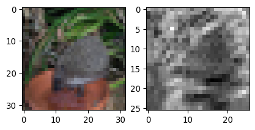
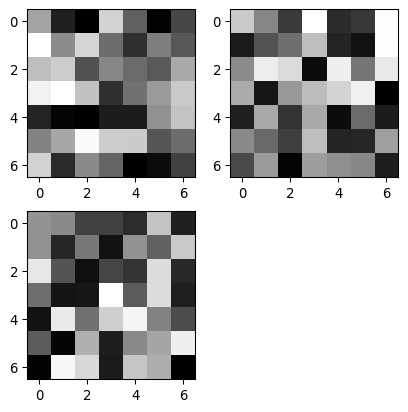
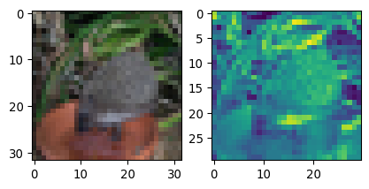
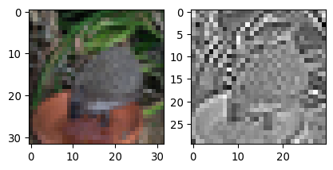
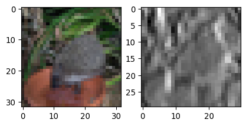
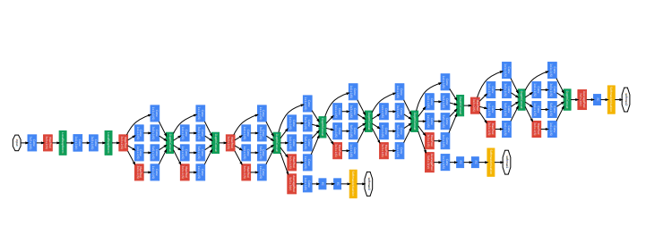
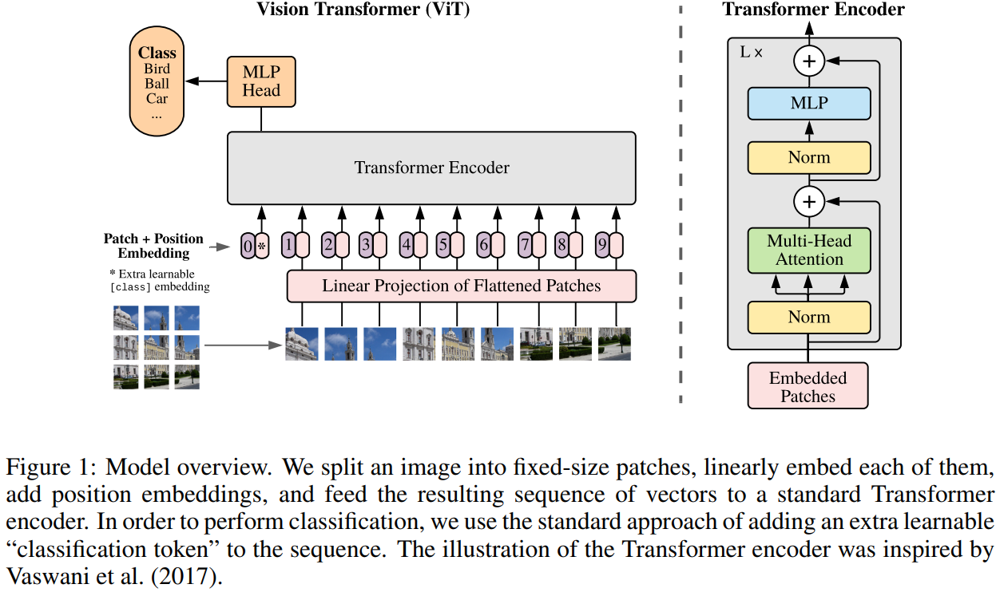
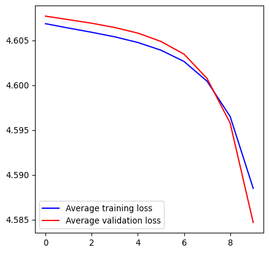

Advanced Machine Learning with Python (Session 1 - Part 2)
Materials
Convolutional Neural Network (CNN or ConvNet)
Convolution layers
The most common operation in DL models for image processing are Convolution operations.
2D Convolution
The animation shows the convolution of a 7x7 pixels input image (bottom) with a 3x3 pixels kernel (moving window), that results in a 5x5 pixels output (top).
Exercise: Visualize the effect of the convolution operation
print("Input:", type(x), x.dtype, x.shape, x.min(), x.max())
print("Output:", type(fx), fx.dtype, fx.shape, fx.min(), fx.max())Input: <class 'torch.Tensor'> torch.float32 torch.Size([128, 3, 32, 32]) tensor(0.) tensor(1.)
Output: <class 'torch.Tensor'> torch.float32 torch.Size([128, 1, 26, 26]) tensor(-0.8468, grad_fn=<MinBackward1>) tensor(0.1861, grad_fn=<MaxBackward1>)Warning
The convolution layer is initialized with random values, so the results will vary.
Exercise: Visualize the effect of the convolution operation

Important
By default, outputs from PyTorch modules are tracked for back-propagation.
To visualize it with matplotlib we have to .detach() the tensor first.
Exercise: Visualize the effect of the convolution operation

Exercise: Visualize the effect of the convolution operation
Exercise: Visualize the effect of the convolution operation

Experiment with different values and shapes of the kernel https://en.wikipedia.org/wiki/Kernel_(image_processing)
Exercise: Visualize the effect of the convolution operation
conv_1 = nn.Conv2d(in_channels=3, out_channels=1, kernel_size=3, padding=0, bias=False)
conv_1.weight.data[:] = torch.FloatTensor([
[[[0, -1, 0], [-1, 5, -1], [0, -1, 0]],
[[0, 0, 0], [0, 0, 0], [0, 0, 0]],
[[0, 0, 0], [0, 0, 0], [0, 0, 0]]]
])
fx = conv_1(x)
fig, ax = plt.subplots(1, 2)
ax[0].imshow(x[0].permute(1, 2, 0))
ax[1].imshow(fx.detach()[0, 0], cmap="gray")
plt.show()
Experiment with different values and shapes of the kernel https://en.wikipedia.org/wiki/Kernel_(image_processing)
Exercise: Visualize the effect of the convolution operation
conv_1 = nn.Conv2d(in_channels=3, out_channels=1, kernel_size=3, padding=0, bias=False)
conv_1.weight.data[:] = torch.FloatTensor([
[[[1, 0, -1], [1, 0, -1], [1, 0, -1]],
[[1, 0, -1], [1, 0, -1], [1, 0, -1]],
[[1, 0, -1], [1, 0, -1], [1, 0, -1]]]
])
fx = conv_1(x)
fig, ax = plt.subplots(1, 2)
ax[0].imshow(x[0].permute(1, 2, 0))
ax[1].imshow(fx.detach()[0, 0], cmap="gray")
plt.show()
Experiment with different values and shapes of the kernel https://en.wikipedia.org/wiki/Kernel_(image_processing)
Examples of popular Deep Learning models in computer vision
- Residual Neural Networks

He, Kaiming et al. “Deep Residual Learning for Image Recognition.” 2016 IEEE Conference on Computer Vision and Pattern Recognition (CVPR) (2015): 770-778.
Examples of popular Deep Learning models in computer vision
- Inception (v3)

Szegedy, Christian et al. “Going deeper with convolutions.” 2015 IEEE Conference on Computer Vision and Pattern Recognition (CVPR) (2014): 1-9.
Examples of popular Deep Learning models in computer vision
- U-Net (cell segmentation)

Ronneberger, Olaf et al. “U-Net: Convolutional Networks for Biomedical Image Segmentation.” ArXiv abs/1505.04597 (2015): n. pag.
Examples of popular Deep Learning models in computer vision
- Vision Transformer (classification and segmentation)

Dosovitskiy, Alexey et al. “An Image is Worth 16x16 Words: Transformers for Image Recognition at Scale.” ArXiv abs/2010.11929 (2020): n. pag.
- Segment Anything Model (SAM)
- Micro-SAM
Examples of popular Deep Learning models in computer vision
- LeNet-5 for handwritten digits classification (LeCun et al.)

LeCun, Yann et al. “Gradient-based learning applied to document recognition.” Proc. IEEE 86 (1998): 2278-2324.
By Daniel Voigt Godoy - https://github.com/dvgodoy/dl-visuals/, CC BY 4.0, Link
Exercise: Implement and train the LetNet-5 model with PyTorch
lenet_clf = nn.Sequential(
nn.Conv2d(in_channels=3, out_channels=6, kernel_size=5, bias=True),
nn.ReLU(),
nn.MaxPool2d(kernel_size=2),
nn.Conv2d(in_channels=6, out_channels=16, kernel_size=5, bias=True),
nn.ReLU(),
nn.MaxPool2d(kernel_size=2),
nn.Flatten(),
nn.Linear(in_features=16*5*5, out_features=120, bias=True),
nn.ReLU(),
nn.Linear(in_features=120, out_features=84, bias=True),
nn.ReLU(),
nn.Linear(in_features=84, out_features=100, bias=True),
)Note
Pooling layers are used to downsample feature maps to summarize information from large regions.
Exercise: Implement and train the LetNet-5 model with PyTorch
Exercise: Implement and train the LetNet-5 model with PyTorch
import torch.optim as optim
num_epochs = 10
train_loss = []
val_loss = []
if torch.cuda.is_available():
lenet_clf.cuda()
optimizer = optim.SGD(lenet_clf.parameters(), lr=0.01)
loss_fun = nn.CrossEntropyLoss()
for e in range(num_epochs):
train_loss_avg = 0
total_train_samples = 0
lenet_clf.train()
for x, y in cifar_train_dl:
optimizer.zero_grad()
if torch.cuda.is_available():
x = x.cuda()
y_hat = lenet_clf( x ).cpu()
loss = loss_fun(y_hat, y)
train_loss_avg += loss.item() * len(x)
total_train_samples += len(x)
loss.backward()
optimizer.step()
train_loss_avg /= total_train_samples
train_loss.append(train_loss_avg)
val_loss_avg = 0
total_val_samples = 0
lenet_clf.eval()
with torch.no_grad():
for x, y in cifar_val_dl:
if torch.cuda.is_available():
x = x.cuda()
y_hat = lenet_clf( x ).cpu()
loss = loss_fun(y_hat, y)
val_loss_avg += loss.item() * len(x)
total_val_samples += len(x)
val_loss_avg /= total_val_samples
val_loss.append(val_loss_avg)
print(f"[Epoch {e}] Training loss: {train_loss_avg}, validation loss: {val_loss_avg}")[Epoch 0] Training loss: 4.606845104980469, validation loss: 4.607688095855713
[Epoch 1] Training loss: 4.606358392333984, validation loss: 4.6072938385009765
[Epoch 2] Training loss: 4.6058888946533205, validation loss: 4.606900331115723
[Epoch 3] Training loss: 4.605380735778809, validation loss: 4.606419638061523
[Epoch 4] Training loss: 4.604751779937744, validation loss: 4.605797494506836
[Epoch 5] Training loss: 4.603894428253174, validation loss: 4.604871366882324
[Epoch 6] Training loss: 4.6026390899658205, validation loss: 4.60345597076416
[Epoch 7] Training loss: 4.600434151458741, validation loss: 4.600740374755859
[Epoch 8] Training loss: 4.596508473205566, validation loss: 4.59577003326416
[Epoch 9] Training loss: 4.588493662261963, validation loss: 4.584687497711181Exercise: Implement and train the LetNet-5 model with PyTorch

Exercise: Implement and train the LetNet-5 model with PyTorch
from torchmetrics.classification import Accuracy
lenet_clf.eval()
val_acc_metric = Accuracy(task="multiclass", num_classes=100)
test_acc_metric = Accuracy(task="multiclass", num_classes=100)
train_acc_metric = Accuracy(task="multiclass", num_classes=100)
with torch.no_grad():
for x, y in cifar_train_dl:
if torch.cuda.is_available():
x = x.cuda()
y_hat = lenet_clf( x ).cpu()
train_acc_metric(y_hat.softmax(dim=1), y)
train_acc = train_acc_metric.compute()
for x, y in cifar_val_dl:
if torch.cuda.is_available():
x = x.cuda()
y_hat = lenet_clf( x ).cpu()
val_acc_metric(y_hat.softmax(dim=1), y)
val_acc = val_acc_metric.compute()
for x, y in cifar_test_dl:
if torch.cuda.is_available():
x = x.cuda()
y_hat = lenet_clf( x ).cpu()
test_acc_metric(y_hat.softmax(dim=1), y)
test_acc = test_acc_metric.compute()
print(f"Training acc={train_acc}")
print(f"Validation acc={val_acc}")
print(f"Test acc={test_acc}")
train_acc_metric.reset()
val_acc_metric.reset()
test_acc_metric.reset()Training acc=0.014574999921023846
Validation acc=0.01510000042617321
Test acc=0.013700000010430813